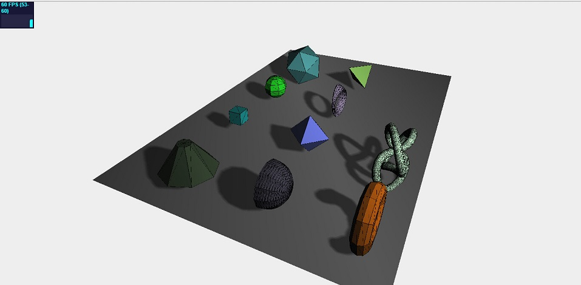
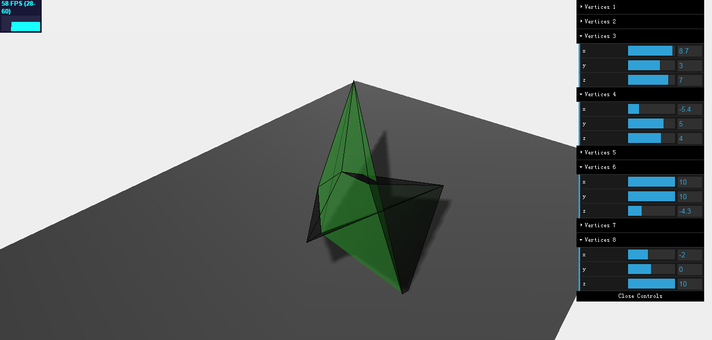
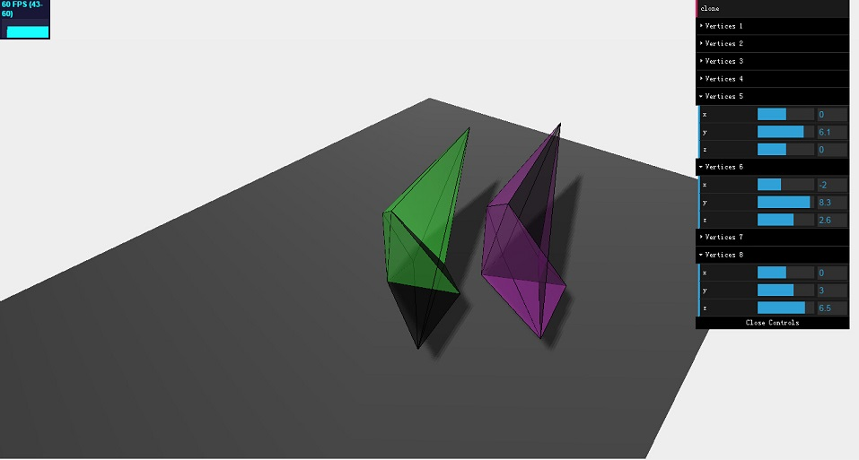

（1）创建自定义几何体
（2）克隆几何体
（3）通过前两个例子了解几何体Geometry所具有的重要属性与函数
目前为止每一个实例中，你都见到几何体和网格的使用。例如，我们用下面的代码在场景内添加了球体：
var sphereGeometry = new THREE.SphereGeometry(4,20,20);
var sphereMaterial = new THREE.MeshBasicMaterial({color: 0x7777ff);
var sphere = new THREE.Mesh(sphereGeometry,sphereMaterial);
我们已经定义了物体的外形，它的几何形状，它看起来的样子，它的材质，并且将它们与网格结合添加到一个场景里。在这一节我们将进一步了解Geometry和Mesh对象。我们先从geometry开始。
Three.js库拥有一个庞大的，具有各类现成几何形状的，可以在场景里使用的类库。你可以在下图中看到：
在以后的章节将重点讨论这些几何体。现在我们着重于geometry变量到底是什么。
在Three.js中或在其他大部分3D库中的geometry，本质是空间中点的集合，以及一些面连接着这些点，比如立方体cube：
● 一个立方体有8个角，每一个角可以定义为 (x,y,z)坐标的组合。因此每个立方体在3D空间中有8个点。在Three.js库中，这些点被称为vertices。
● 一个立方体有6个面，每个面的角上都有1个顶点。在Three.js库中，这些面被称为face。
当你使用其中一个Three.js库所提供的几何体时，你不需要自己去定义所有的顶点和面。对于立方体，你只需要定义长，高和深。Three.js库使用这些信息来创建一个在正确位置和正确面的八个顶点的几何体。即使你通常使用Three.js库提供的几何体，或者自动生成它们，你也完全可以手动使用vertices和faces来定义几何体。这在如下代码片段所示：
var vertices = [
new THREE.Vector3(1,3,1),
new THREE.Vector3(1,3,-1),
new THREE.Vector3(1,-1,1),
new THREE.Vector3(1,-1,-1),
new THREE.Vector3(-1,3,-1),
new THREE.Vector3(-1,3,1),
new THREE.Vector3(-1,-1,-1),
new THREE.Vector3(-1,-1,1)
];
var faces = [
new THREE.Face3(0,2,1),
new THREE.Face3(2,3,1),
new THREE.Face3(4,6,5),
new THREE.Face3(6,7,5),
new THREE.Face3(4,5,1),
new THREE.Face3(5,0,1),
new THREE.Face3(7,6,2),
new THREE.Face3(6,3,2),
new THREE.Face3(5,7,0),
new THREE.Face3(7,2,0),
new THREE.Face3(1,3,4),
new THREE.Face3(3,6,4),
];
var geom = new THREE.Geometry();
geom.vertices = vertices;
geom.faces = faces;
Geom.computeCentroids();
geom.mergeVertices();
这段代码给你显示了如何创建一个简单立方体。我们已经定义了组成这个立方体的顶点数组。这些点通过创建的三角形面所连接并储存在faces数组。例如new THREE.Face3(0,2,1)使用了顶点数组中的0,2,1元素来组成三角形。
【提示：这个例子，我们使用THREE.Face3元素来定义立方体6个面这样的话，则是每个面有2个三角形。在以前版本的Three.js库，你也可以使用四边形代替三角形。四边形使用4个顶点定义面。到底是使用四边形还是三角形更好在3D模型世界一直有强烈的争论。基本上在建模时使用四边形总是更好。因为他们比三角形可以更容易增强或平滑。对于渲染和游戏引擎，使用三角形更简单因为任何形状都能被渲染为三角形】
使用这些顶点和面，我们现在创建自己风格的geometry，并且用它来创建一个mesh。我已经创建了一个例子，你可以设置顶点的位置。你能改变立方体的所有顶点位置，本例的结果将如下图所示：
当你用拖拉条控件改变其中一个属性，立方体会根据改变的顶点位置正确渲染。这不是什么即改即呈现效果。因为性能的问题，Three.js库默认一个网格几何体将不会在其生命中发生变化。为了让我们的例子能运行，我们需要确保一下代码加在了渲染循环中：
让我们先看一下我们用来为立方体创建的绿色材质的代码：
var materials = [
new THREE.MeshLambertMaterial( { opacity:0.6, color: 0x44ff44, Transparent:true } ),
new THREE.MeshBasicMaterial( { color: 0x000000, wireframe: true } )
];
正如你所看到，我没有使用单一的材质，而是有2个材质的数组。理由是除了显示一个半透明的绿色方块，我也要给你们显示出线框，这样你们能很清楚的看到顶点和面的位置。Three.js库，当然会在当要创建网格时提供多种材质的使用。你可以这样来使用SceneUtils.createMultiMaterialObject()函数：
var mesh = THREE.SceneUtils.createMultiMaterialObject(geom, materials);
Three.js库在这个函数中做的事不是创建一个THREE.Mesh实例，但是它会创建你所指定的每一种材质，并把这些网格放在组里。这个组可以以相同的方式使用，就像你使用Scene对象那样。你可以添加网格，通过name得到网格等等。比如，给这个组里的所有子元素加上阴影，我们做如下的事：
mesh.children.forEach(function(e) {e.castShadow=true});
现在是最关键的一步，正如你先前所学。在场景内有任何变化，都要在渲染渲染循环里面进行重新渲染，这样才能将结果显示出来。那么我们需要在渲染循环里添加如下代码：
var vertices = [];
for (var i = 0; i < 8; i++) {
vertices.push(new THREE.Vector3(controlPoints[i].x, controlPoints[i].y, controlPoints[i].z));
}
mesh.children.forEach(function(e) {
e.geometry.vertices = vertices;
e.geometry.verticesNeedUpdate = true;
e.geometry.computeFaceNormals();
});
上面代码段的前4行，我们定义一个变量来保存在GUI控件里我们使用滚动条改变的8个顶点的坐标。代码的后半部分我们将网格的顶点赋值为我们GUI内的顶点值。我们无需重新配置几何体的面，因为它们和先前一样任然连接着相同的点。在我们设置更新后的顶点后，我们要告诉几何体顶点需要更新。我们可以设置几何体的verticesNeedUpdate属性为true来做到。最后将使用computeFaceNormals()函数来做一次面的重新计算来更新完整的模型。
你可以使用以前的实例按照上述教程进行修改，从而最终得到先前截图中所显示的效果。你需要的不只是将本节所列出的代码复制进实例，并且还需要添加一些基本的代码，这些代码已经在第一章的教程中讲过，比如你需要写将mesh添加到scene内的代码，需要添加GUI控件的代码来使之可以动态改变你所创建的几何体的8个顶点坐标等。
我们将了解的最后一个几何体函数是clone()函数。我们提到提合同定义了物体的构成和形状，并且和材质结合。我们创建的物体可以添加到场景并由Three.js库渲染。有了clone()函数，正如名字所示，我们能复制几何体，例如用它来创建一个不同的网格和不同的材质。在对前面半节教程所得到的代码进行补充，你可以看到一个clone按钮在GUI控件的顶部，如下截图所示：
如果你先前已经写好了自定义几何体的实例，那么增加克隆功能的代码会简单很多，你只需要在GUI空间内增加克隆函数：
gui.add(new function() {
this.clone = function() {
var cloned = mesh.children[0].geometry.clone();
var materials = [
new THREE.MeshLambertMaterial({
opacity: 0.6,
color: 0xff44ff,
transparent: true
}),
new THREE.MeshBasicMaterial({
color: 0x000000,
wireframe: true
})
];
var mesh2 = THREE.SceneUtils.createMultiMaterialObject(cloned, materials);
mesh2.children.forEach(function(e) {
e.castShadow = true
});
mesh2.translateX(5);
mesh2.translateZ(5);
mesh2.name = "clone";
scene.remove(scene.getChildByName("clone"));
scene.add(mesh2);
}
}, 'clone');
这段JavaScript代码会在clone按钮点击后调用。这里我们克隆了立方体的第一个子元素的几何体。记住，mesh变量包含2个子元素：一个mesh使用MeshLambertMaterial材质，一个mesh使用MeshBasicMaterial材质。基于这个克隆的几何体，我们将创建一个新的网格，命名为mesh2。我们可以通过使用translate()函数移动这个网格。然后移除前一次我们克隆的物体（如果存在的话），增加克隆体到场景里。
本节对于几何体Geometry已经介绍足够多了。在线IDE中有本节最终的实例可供参考。